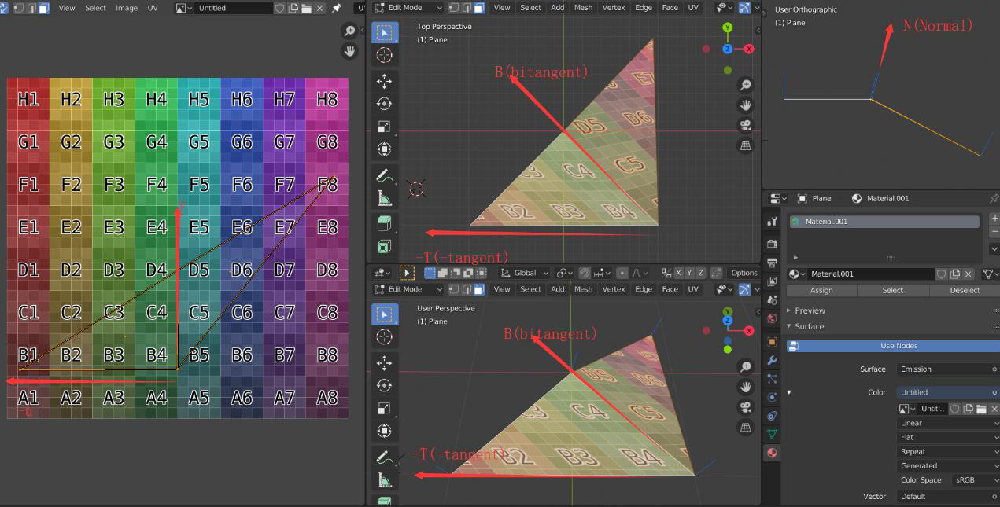

A complete analysis of the Tangent Space.
1. Introduction
The definition and calculation methods of the tangent space are abundant, but many resources have misleading or fundamentally wrong explanations in their definitions. In order to completely and correctly understand the tangent space, this article will analyze the tangent space from its definition to its calculation and provide examples to clarify any confusion. Additionally, readers are encouraged to think critically and make judgments in this article, which is intended to be helpful.
Before delving into the main content, you can ask yourself the following questions if you are uncertain. If you still have confusion, please continue reading this article to resolve them:
-
Is the direction of the tangent axis the same as the u-axis, and the direction of the bitangent axis the same as the v-axis?
-
Are the uv axes mapped onto the three-dimensional surface perpendicular to each other?
-
How is the N (Normal) axis in the TBN (tangent, bitangent, normal) space obtained? Is it perpendicular to the mapped direction of the uv axes on the three-dimensional surface?
-
Can vertex normals be directly obtained by averaging the normals of adjacent faces?
-
After carefully examining this potentially ambiguous image, do you have any new thoughts or insights?
